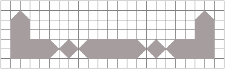
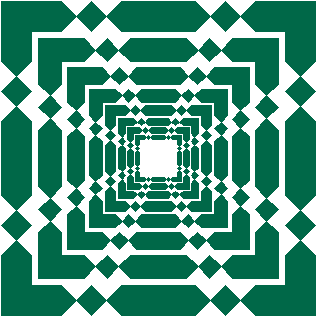
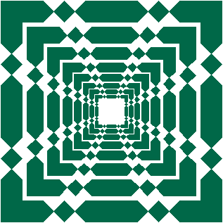
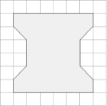

Zadania pierwszego etapu Konkursu Informatycznego dla gimnazjalistów LOGIA 13
Zadanie 1.
Napisz procedurę PLECIONKA, która tworzy na środku ekranu rysunek plecionki taki, jak obok. Wysokość rysunku wynosi nie mniej niż 400.
Zadanie 2.
|
Napisz procedurę RAMKI :ile, która tworzy na środku ekranu rysunek składający się z :ile ramek, taki, jak w przykładach. Parametr :ile może przyjmować wartości od 1 do 9. Szerokość zewnętrznej ramki wynosi 480. Szerokość każdej kolejnej ramki stanowi 16/21 szerokości ramki ją obejmującej. |

|
Poniżej przedstawiony jest efekt wywołania RAMKI 1 i RAMKI 8.
 

Zadanie 3.
|
Burmistrz miasta Logianów, planując wiele inwestycji, zlecił Działowi Architektury wykonanie wizualizacji. Wokół budynków mają zostać ułożone dwukolorowe chodniki z kostek takich, jak na rysunku wyżej. Niektóre kostki należy przeciąć na pół tak, by powstał prostokątny chodnik. Napisz procedurę CHODNIK :ilek :iler, która tworzy rysunek prostokątnego chodnika ułożonego z szarych i różowych kostek. Parametr :ilek oznacza liczbę kolumn ułożonych z różowych kostek. Parametr :iler oznacza liczbę różowych kostek potrzebnych do ułożenia jednej kolumny. Oba parametry mogą przyjmować wartości od 1 do 20. Wysokość rysunku wynosi 400 lub szerokość 600. Poniżej przedstawiony jest efekt wywołania CHODNIK 1 2 i CHODNIK 4 5. |

|
Zadanie 4.
Napisz funkcję KIEDY :x :y, której wynikiem będzie liczba określająca, którego dnia mały żuczek znajdzie się na szczycie dziesięciometrowego słupa. Żuczek w dzień wspina się o :x centymetrów, w nocy osuwa się o :y centymetrów. Załóż, że :x >:y.
Przykłady:
| Wynikiem | KIEDY 300 100 | jest 5. |
| Wynikiem | KIEDY 4 2 | jest 499. |